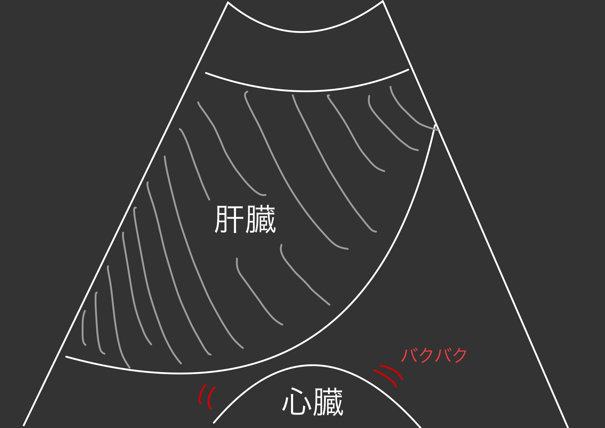
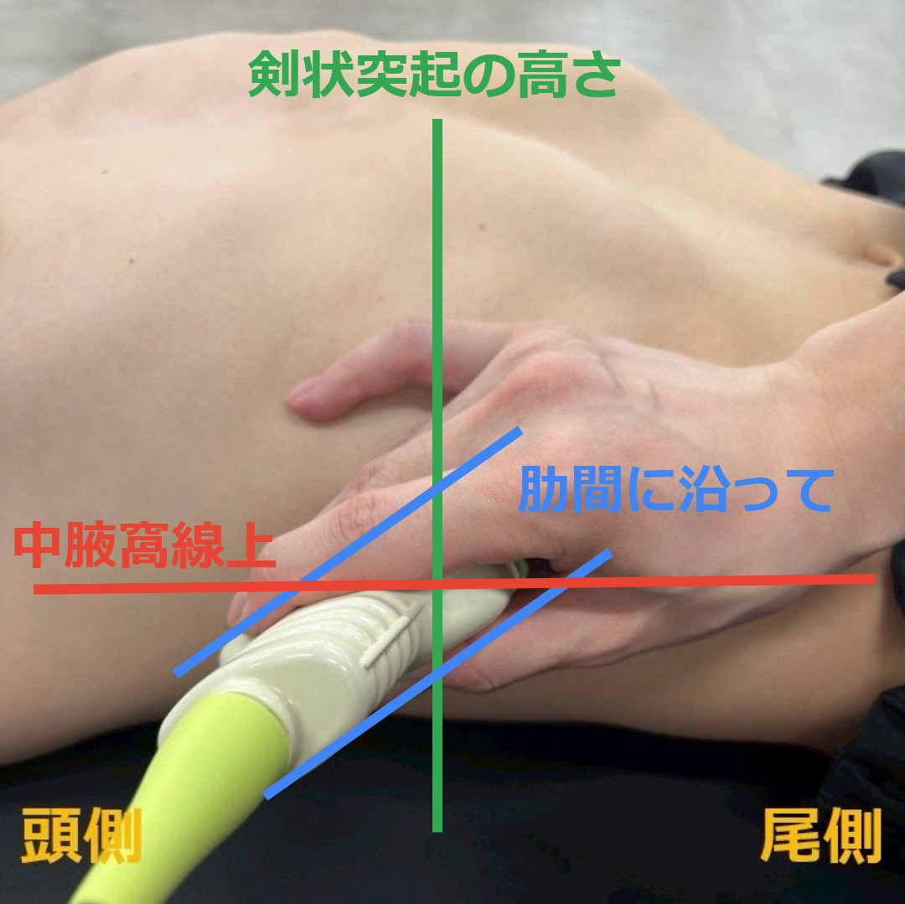
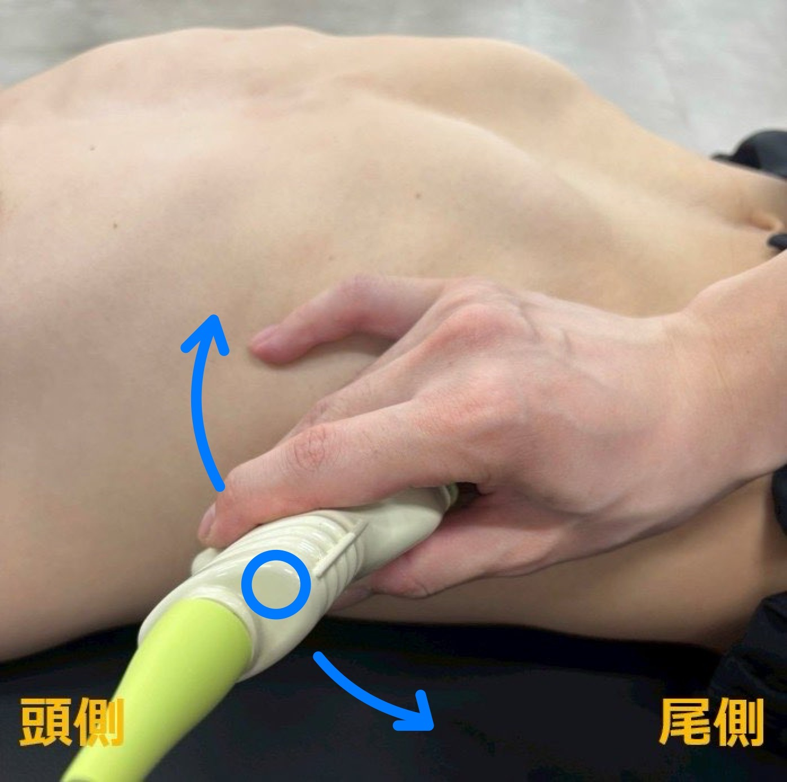
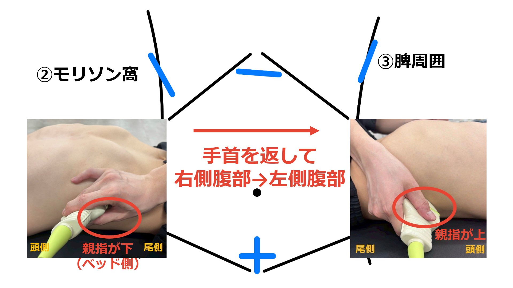
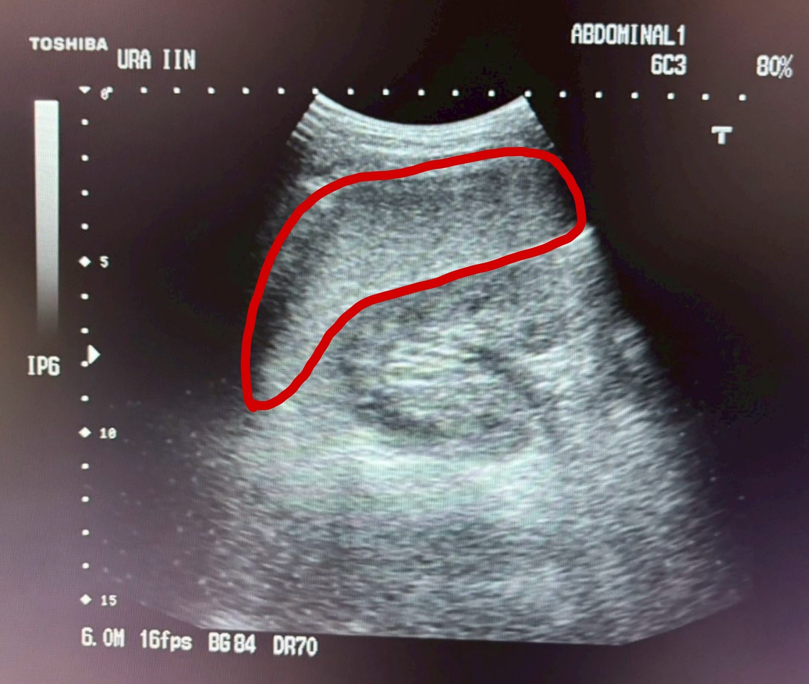
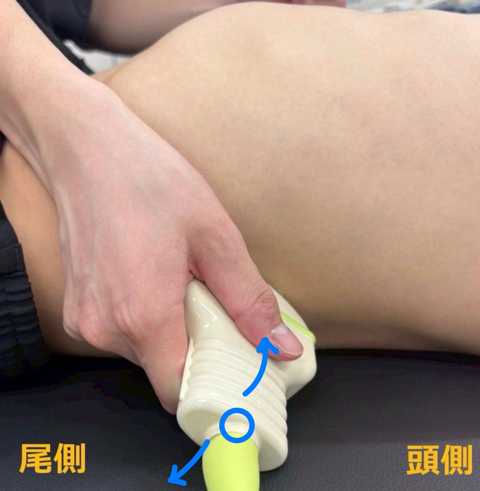

ここは「実際に超音波プローブを当てる」特訓の星。4つの探査ポイントをクリアすれば、恒星ファスタリスへのパスポートが手に入ります！


「はめ込む」＋「寝かせる」がセット！この2つが決まれば心臓が見えてくる。
剣状突起（けんじょうとっき）を
指で触れてみよう。
その直下が心窩部のプローブを当てる場所！
肋骨弓の内側に指を入れるように触ると感覚がわかる。
全部チェックできたら次へ進もう！
触れた感覚があれば、プローブを当てたときにブレにくい。

プローブを寝かせることでビームが肋骨弓をくぐり心臓へ届く！最初はしっかり寝かせよう。

見つけたら次のステップへ。「息を吸って止めてもらう」とさらに見やすくなります！
「息を吸って、止めてください」
→ 心臓が画面中央に上がってくる！
息を吸うと患者さんのお腹が膨らむ！
プローブが押し出されて滑りやすくなるので注意！
吸気前にプローブをしっかり固定！ズレたら最初からやり直しになるよ。

心膜外側に黒い帯が見えたら心タンポナーデを疑う！
直ちに上級医へ報告せよ！
プローブを扇のように動かして「扇動走査」で広く観察しましょう。絶対に忘れずに！

扇動走査を忘れずに！
1断面だけの観察は見落としにつながる危険があります。


当てる前に実際に触らせてもらって肋骨の走行を確認しよう！
患者さんに右手を挙げてもらうと肋間が広がって当てやすくなる！
肋骨と肋間（肋骨と肋骨の隙間）を確認しよう。
剣状突起の高さあたりの肋間が
モリソン窩のプローブを当てる場所。
肋骨の走行は人によって異なる！慣れるまでは毎回触れてから当てる習慣をつけよう。

腎臓は背側にある！
プローブが腹側に向きすぎると肝臓だけしか見えないので、もっと後ろへ傾ける。
小指・薬指が浮いている場合：
プローブが安定せず、映像がブレる原因になる。体表にしっかり当てること！
この持ち方は脾周囲でも同じ！今マスターしておけば後が楽になるよ。

この画像のように肝臓と右腎が並んで見え、境界（モリソン窩）が確認できれば合格！
モリソン窩に黒い帯（無エコー域）が見えたら出血の可能性！すぐに上級医へ報告せよ！


扇動走査を忘れずに！
1断面だけでは少量の出血を見逃す可能性がある。
カーテンサインとは？
呼吸に伴い「肺が横隔膜を越えて動く」様子が見える現象。
肺が動くとエコー画面上でカーテンのように描出範囲が変化する。
プローブを1肋間頭側に上げて患者さんに息を吸ってもらう → カーテンサインを確認（右胸水評価）

カーテンサインあり：呼吸に伴い肺が横隔膜を越えて動く → 胸水なし（正常）
カーテンサインなし：肺が動かない → 胸水貯留を疑う！
胸腔内に液体が貯まると肺が十分に拡張できず危険！



右側（モリソン窩）の時よりもさらに背中側！これが脾周囲描出の最大のポイント。


画面左に見えている黒い部分は肺

扇動走査を忘れずに！
脾周囲の出血は脾臓と横隔膜の間にも貯まりやすい。広く観察しよう。
プローブを1肋間頭側に上げて息を吸ってもらう → カーテンサインを確認（左胸水評価）
※左腎は右腎より頭側にある。1肋間上げなくても、肺が近くてカーテンサインが確認できるかも！
※この画像は右側腹部のものです
カーテンサインあり：呼吸に伴い肺が横隔膜を越えて動く → 胸水なし（正常）
カーテンサインなし：肺が動かない → 胸水貯留を疑う！
難しい場合は → 実際に肋間を触って確認してみる